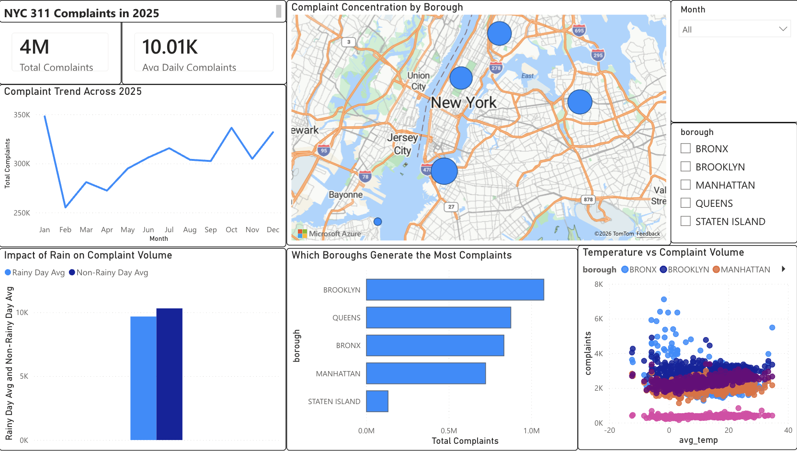
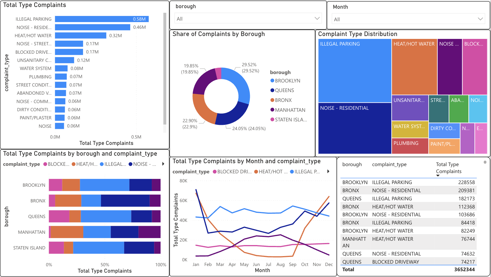
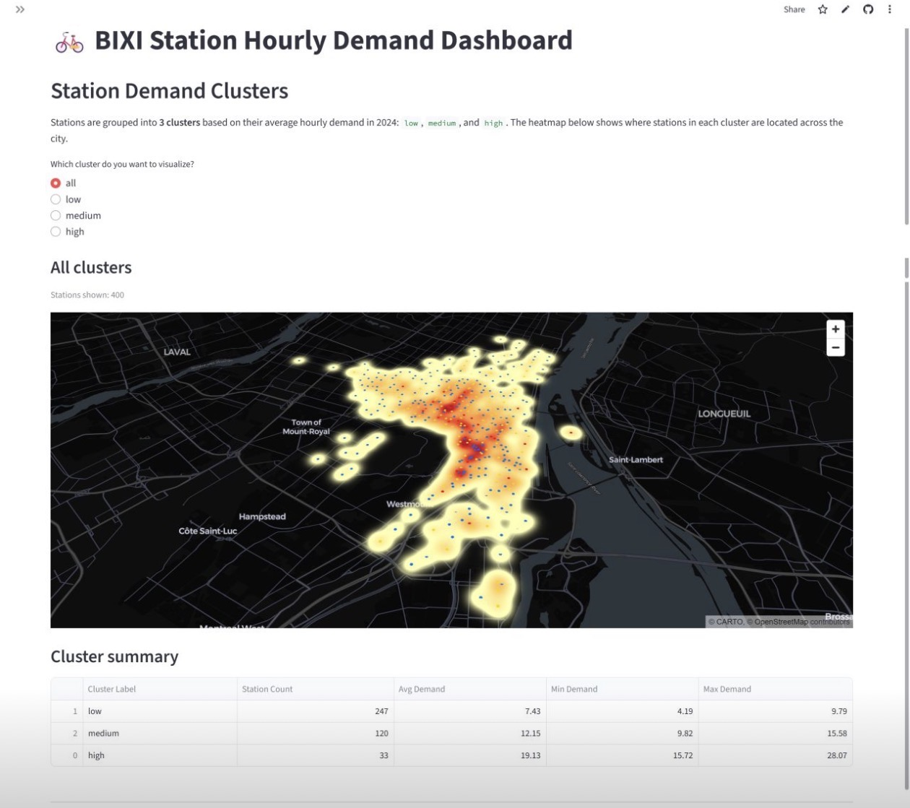
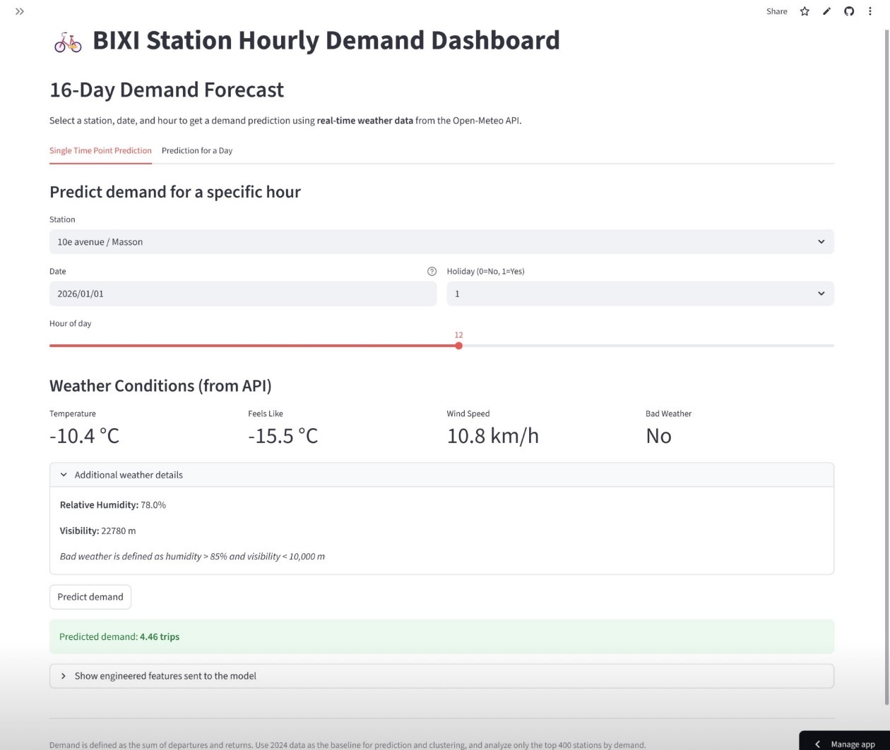
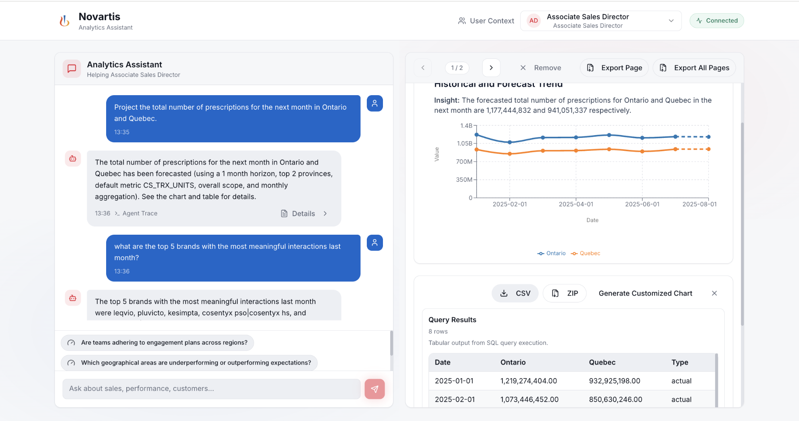
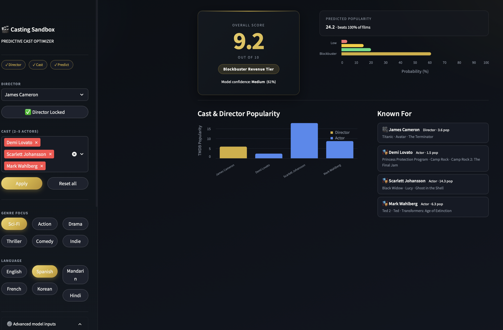
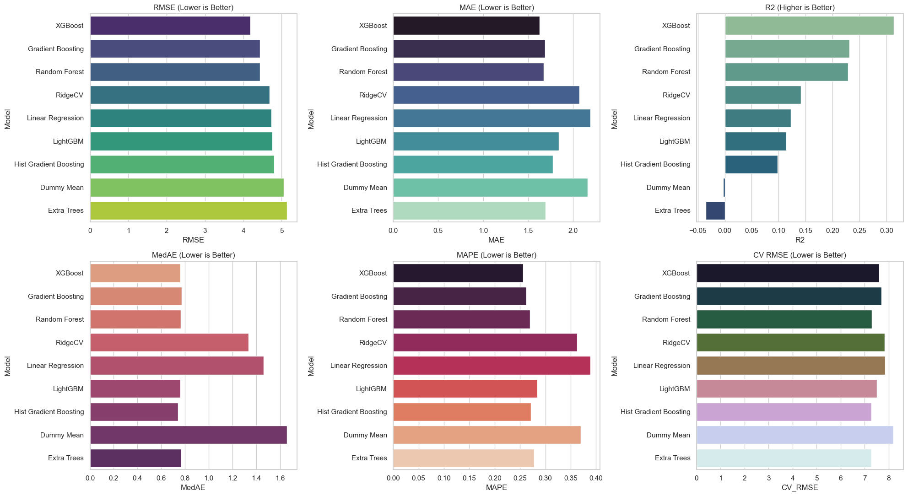

Data Analyst · Business Analyst · Analytics Engineer
I turn complex data into actionable insights and intelligent solutions. With a background in engineering and a Master's in Management Analytics from McGill University, I combine data analytics, machine learning, and software development to solve real-world business problems.
Who I am
I'm a data analyst and analytics engineer with a Master's in Management Analytics from McGill University and a dual degree in Engineering and Business Analytics from Comillas (ICAI). I specialize in turning raw data into dashboards, models, and tools that help organizations make faster, better decisions.
I've worked across healthcare, aviation, and technology - building Power BI dashboards, ML pipelines, and AI-powered applications. I bridge the gap between data and business: I speak fluently to both engineers and stakeholders, and I care deeply about making insights accessible and actionable.
I bring engineering rigor to every analytics project - whether that's designing a star-schema data model, writing production-grade Python, or building a full-stack analytics platform from scratch.
Academic background
Where I've worked
What I work with
What I've built
Problem: NYC city operations teams had no unified view of service demand across 4 million annual complaints - making it hard to allocate resources, identify hotspots, or understand what drives complaint volumes. Solution: Built an end-to-end Power BI solution with a star schema data model integrating NYC Open Data and Open-Meteo weather APIs. Impact: Surfaced that Brooklyn and Queens drive the highest complaint volumes and that illegal parking and noise dominate citywide - with borough-level breakdowns enabling targeted operational decisions.

Demand overview
Complaint composition by boroughProblem: BIXI bike-share operators struggled to anticipate hourly demand across 400+ stations, leading to rebalancing inefficiencies and poor station availability. Solution: Built an end-to-end ML forecasting pipeline on 13.2M trip records, combining temporal, weather, and geospatial features with Linear Regression and Random Forest models, deployed as an interactive Streamlit dashboard. Impact: Delivered single-point forecasts, 24-hour demand curves with live weather integration, and a geospatial heatmap of station demand clusters - enabling proactive rebalancing decisions.

Station demand clusters
16-day forecastProblem: Pharmaceutical sales teams needed faster access to business insights but lacked the technical skills to query data directly - relying on analysts as intermediaries. Solution: Built a two-panel web application where users ask natural-language questions and receive AI-generated charts and tables in real time, powered by a Databricks LLM backend. Impact: Delivered a fully self-service analytics experience with persona-driven UX for three sales roles, five chart types, and a multi-format export suite - removing the analyst bottleneck entirely.

AI Analytics AssistantProblem: Film studios invest hundreds of millions with little data-driven guidance on what drives commercial success before a movie releases. Solution: Built two ML pipelines on 9,290 TMDB films - a Gradient Boosting regression model for popularity (R² 0.52) and a semi-supervised Self-Training classifier for revenue tier that leverages 6,600+ unlabeled movies to beat all purely supervised baselines. Impact: Deployed as a Casting Sandbox Streamlit app where studio teams can swap directors, adjust cast, and change release timing for instant what-if predictions.

Casting Sandbox app
Popularity model benchmarkDesigned and developed an end-to-end application to assess risk on bank transfers for a major banking institution, covering multi-environment testing and technical documentation.
Validated and documented the ICARO automated system used by air navigation services, contributing to international Digital Remote Tower System deployments across multiple countries.
Co-founded the ICAI Robotics Club and led the development of competitive robotics projects for Spain's National Robotics League.